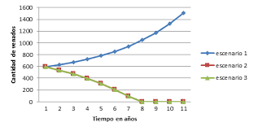
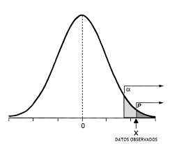

Grado en Matemáticas: Quinto Curso
Volver a Matemáticas
Análisis Funcional
José Orihuela
Apuntes de teoría
Exámenes resueltos
Entregas de teoría

Laboratorio de Modelización
Víctor, Linero, Fernández, Pulido
Trabajo Grupal: Análisis
Entregas individuales: Análisis
Trabajo grupal: Optimización
Entrega individual: Optimización

Inferencia Estadística
Félix Belzunce y José María Ruiz
Apuntes de teoría
Entrega de prácticas
Entregas de teoría